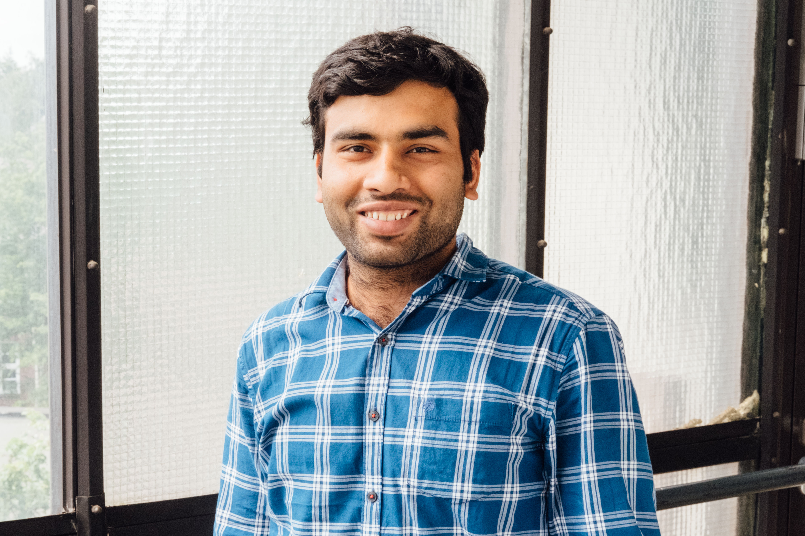

Gautam Kishore Shahi
PhD Student in User-Centered Social Media

I’m a PhD Student in the Research Training Group User-Centred Social Media at the research group for Professional Communication in Electronic Media / Social Media (Prof. Dr. Stieglitz) at the University of Duisburg-Essen. My research interests are Web Science, Data Science, and Social Media Analytics.
My background is in computer science, where I've gained valuable insights in India, New Zealand, Italy and now Germany. Outside of academia, I worked as an Assistant System Engineer for Tata Consultancy Services in India.
News
- Our paper titled FakeCovid- A Multilingual Cross-domain Fact Check News Dataset for COVID-19) got accepted at CySoc 2020 - International Workshop on Cyber Social Threats, Co-located with the 14th International AAAI Conference on Web and Social Media (ICWSM 2020)
Publications
- Analysis, Classification and Marker Discovery of GeneExpression Data with Evolving Spiking Neural Networks
Shahi, G. K., Capecci E., Nandini D., Kasabov, N.
(ICONIP 2018) accepted at 25th International Conference on NeuralInformation Processing, Siem Reap, Cambodia, Dec 14 - 16, 2018.
[PDF] - Analysis, Classification and Marker Discovery of GeneExpression Data with Evolving Spiking Neural Networks
Shahi, G. K., Capecci E., Nandini D., Kasabov, N.
(ICONIP 2018) accepted at 25th International Conference on NeuralInformation Processing, Siem Reap, Cambodia, Dec 14 - 16, 2018.
[PDF] - Modelling and Analysis of Temporal Gene Expression DataUsing Spiking Neural Networks
Nandini D., Capecci E., Shahi G.K., Kasabov, N.
(ICONIP 2018) accepted at 25th International Conference on Neural Information Processing, Siem Reap, Cambodia, Dec 14 - 16, 2018
[PDF] - An Ontology for Transportation System
Nandini, D. and Shahi, G. K.
(RuleML+RR 2018) Poster Paper at 2nd International Joint Conference on Rules and Reasoning, Luxembourg, 18-21 Sep 2018
[PDF] - Inducing Schema.org markup from Natural Language Context
Shahi, G. K., Nandini, D., Kumari S.
(RuleML+RR 2018) Poster Paper at 2nd International Joint Conference on Rules and Reasoning, Luxembourg,18-21 Sep 2018
[PDF] - MOD: Metadata for Ontology Description and publication
Dutta, B., Nandini, D. and Shahi, G.K.
(DC-2015) In Proceedings of DCMI International Conference on Dublin Core and Metadata Applications, Sao Paulo, Brazil, 1-4 September 2015, pp. 1-9
[PDF]
Talks
Invited:
- [Upcoming] Fairness, Accountability, and Transparency Seminars and Hackfest UPF Barcelona, Spain, January 2020
- Meedan, Virtual Talk, August 2020
- FakeCovid- A Multilingual Cross-domain Fact Check News Dataset for COVID-19)
CySoc 2020, ICWNSM (virtual) 2020
Academic Service
Conference/Workshop Organizer/Program Committe:
- HASOC Workshop in Forum for Information Retrieval Evaluation (FIRE) 2020
- ECIR 2020: European Conference on Information Retrieval
- ACL-SRW 2020: ACL 2020 Student Research Workshop
- JupyterCon 2020/li>
- Neural Processing Letters by Springer Publication, 2019
- Neural Computing and Applications by Springer Publication, 2019
Mentoring and Co-advising
- Ali Sercan Basyurt (University of Duisburg-Essen, Germany), Master Thesis, January-August, 2020.
- William Kana Tsoplefack (University of Duisburg-Essen, Germany), Bachelor Thesis, May-Augsut, 2020.
- Jonathan Grave, Marie Joelle Salumu, Andreas Oelker (University of Duisburg-Essen, Germany), Research Project, Winter Semester 2019/20.
- Alexander Kocur, Christoph Zils, Eric Hochstrate, Kaan Eyilmez (University of Duisburg-Essen, Germany), Research Project, Summer Semester 2020.
- Caterina Stephan, Lisa Isabella Köhler, Shkolnikov Eugen (University of Duisburg-Essen, Germany), Research Project,Summer Semester 2020.